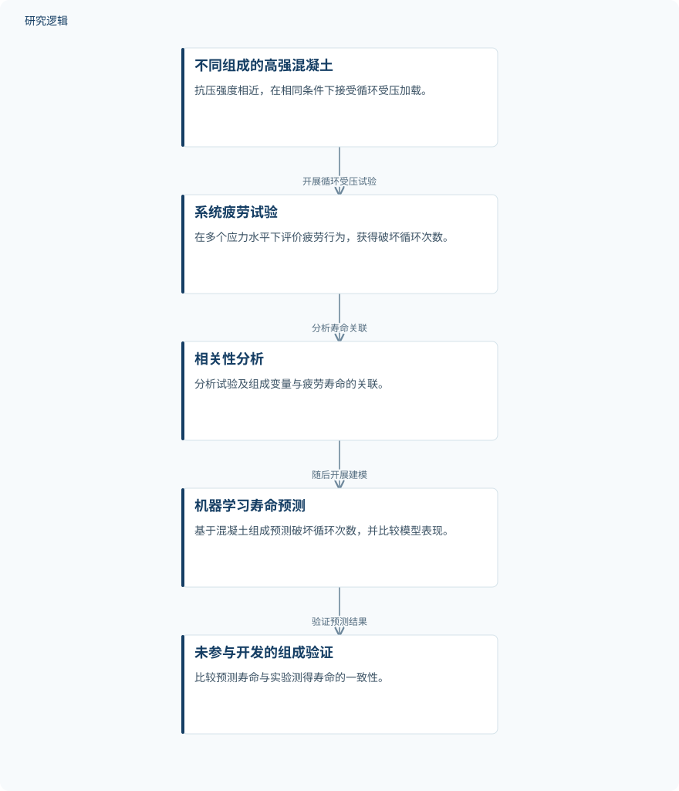

摘要解读
混凝土组成对疲劳寿命的影响：基于机器学习的失效循环次数预测
Influence of concrete composition on fatigue life: Machine learning-based prediction of the number of cycles to failure
解读更新 2026-11-05 08:36 · 依据公开摘要整理，未核验全文细节
抗压强度相近的混凝土，疲劳寿命为何仍可能明显不同？这项研究将混凝土组成纳入机器学习预测，考察配合组成能否提供强度指标之外的寿命信息，为理解材料组成与疲劳设计之间的联系提供依据。
文章目录
相近抗压强度，不等于相近疲劳寿命
摘要指出，现行疲劳设计规定采用保守的安全系数，却未考虑混凝土组成的影响。已有试验证据表明，即使抗压强度相近，不同组成的混凝土也可能表现出显著不同的疲劳寿命。因此，将组成信息引入预测具有明确的工程意义。不过，提高预测准确性、维持结构安全和促进资源高效利用，是摘要提出的潜在价值，不能直接视为已经验证的工程效果。
从循环受压试验到组成驱动的预测
研究在相同试验条件下，对18种组成不同、抗压强度相近的高强混凝土开展循环压缩疲劳试验。每种混凝土至少考察四个应力水平，共完成241次疲劳试验。这一安排使研究能够围绕相近强度条件下的组成差异展开分析。
作者首先针对其中16种混凝土组成开展相关性分析，识别与疲劳寿命相关的试验变量和组成变量；随后实现六种机器学习模型，依据混凝土组成预测破坏循环次数，并利用未参与模型开发的另外两种组成进行验证。
依据摘要整理的组成与疲劳寿命研究过程


仅概括摘要明确报告的试验、相关性分析、机器学习预测与验证关系，不是论文原图。
下载 SVG图示关系说明
实线表示相邻阶段的信息流，虚线表示跨阶段联系或反馈。
循环压缩疲劳试验 → 分析变量与寿命的相关性：开展相关性分析；分析变量与寿命的相关性 → 机器学习预测破坏循环次数：随后建立预测模型；机器学习预测破坏循环次数 → 未参与开发的组成验证：验证寿命预测
组成存在相关性，神经网络与集成方法表现较好
相关性分析中，水泥用量和胶凝材料用量的相关系数约为-0.50，石灰石使用则呈正相关，相关系数为0.63。这些结果描述的是研究数据中的关联，不能据此直接推出增加或减少某种材料就必然改变疲劳寿命。
摘要报告，各模型均能以合理准确度预测疲劳寿命，其中神经网络和集成方法的预测准确度最高，训练数据的R²超过0.95，测试数据的R²超过0.90。对于未参与模型开发的两种混凝土组成，预测寿命与试验测得寿命也表现出良好一致性；摘要未给出该验证的具体误差指标。
较高预测指标仍需结合数据与验证边界理解
仅凭摘要，尚无法判断具体配合比范围、各组成对应的试验数量、应力水平取值，以及训练数据与测试数据如何划分。六种模型的完整配置、调参方式、误差分布，以及是否与现行设计方法直接比较，也需要进一步阅读确认，不能将摘要未报告理解为论文没有开展。
已明确的验证对象是未参与模型开发的两种混凝土组成。其结果支持这些组成上的预测一致性，但是否适用于其他强度等级、加载方式或更广泛的材料体系，摘要不足以判断。
阅读启发：关注组成信息如何进入可靠性判断
阅读启发：这项工作值得关注的不只是预测指标，还包括组成信息究竟补充了哪些强度指标未能表达的差异。进一步阅读时，可重点查看数据划分是否检验了跨组成预测能力，以及预测误差如何影响疲劳设计中的安全判断。在这些问题明确之前，不宜把寿命拟合精度直接等同于工程可靠性提升。
以上为本站阅读启发与建议，不是论文已验证的结论。